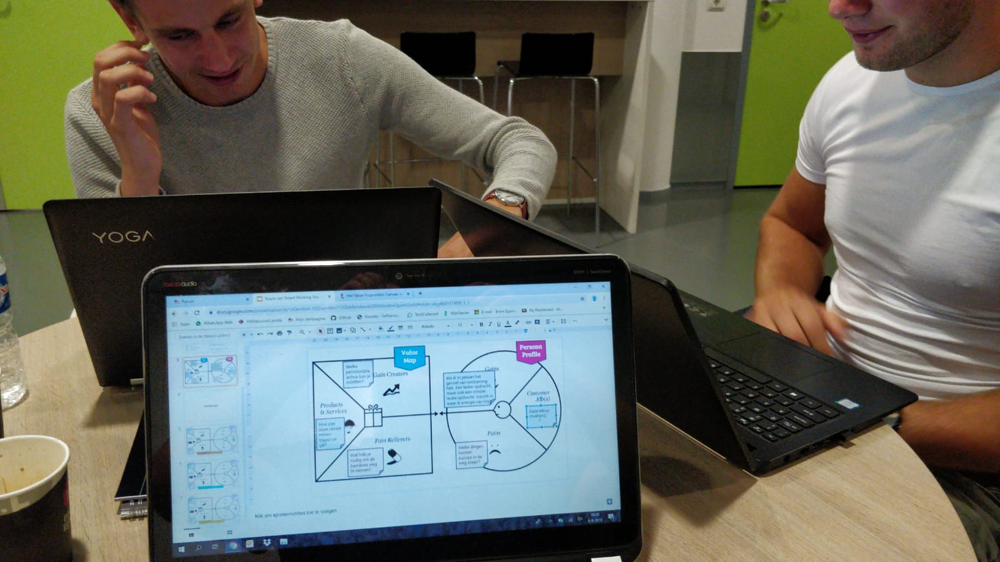

In dit tabblad worden alle opdrachten en progressies van SMART Business weergegeven.
Alle data wordt onderverdeeld per week.
Week 1
In de eerste week ben ik tijdens het college bezig geweest met een personal profile en value map. Hierbij was de opdracht om geïntervieuwd te worden door twee klasgenoten en vervolgens de klasgenoten zelf te interviewen.

Hieronder mijn eigen value map en personal profile
Als opdracht voor thuis moesten we een filmpje maken waarbij je even een korte introductie doet over jezelf, en uitlegt waarom ik gekozen heb voor deze minor. Hieronder het filmpje.
Week 2
In week twee zijn we bezig geweest met een SMART product. Tijdens Deze workshop zijn we onder leiding van Geert Rensen van Be Informed, aan de hand van zijn casus over een verzekeringsmaatschappij, bezig geweest met het Business Model Canvas.
Ter voorbereiding heb ik het volgende artikel geschreven: Voorbereiding week 2
Tijdens de workshop hebben we met een groepje het volgende Business Model Canvas gemaakt van AXA:
In de afbeelding is te zien dat wij gebruik hebben gemaakt van twee verschillende soorten post-it's. De roze post it's zijn van de huidige situatie en de gele van de nieuwe situatie.
In onderstaande link staat het veranderplan, kosten en batenanalyse en de businesscase.
Opdracht Smart Business week 3
Week 4
Deze week zijn we op bezoek geweest bij Elk net buiten Nijmegen. Elk is een bouwbedrijf die Lean en Agile werken in hun bedrijfsstructuur hanteren. Hierdoor is de geheele organisatie gericht op één doel: het creëren van klantwaarde.
Tijdens dit bedrijfsbezoek hebben we eerst een presentatie gekregen van Elk over haar bedrijf. Vervolgens zijn wij meegenomen in het bedrijf en hebben we bekeken hoe ELK te werk gaat met Lean en Agile werken. Wat mij met name opviel was de open ruimtes met veel licht en mogelijkheden tot staplekken. Ook stond er in iedere ruimte een projectplanning die per dag bijgehouden wordt.
Aansluitend op deze rondleiding kregen we een worksop Lean en Agile van Ali Hajou van het bedrijf Blinklane.
Deze workshop begon eerst met een stukje theorie over Lean en Agile. Vervolgens zijn er groepjes gemaakt en hebben we nagebootst hoe een 'sprint' precies werkt door "een feestje te organiseren".
Naar mijn mening was dit een erg leerzame workshop. Vanuit mijn opleiding, technische bedrijfskunde, werd er al veel gesproken over Lean en Agile werken, maar nooit in de praktijk voorgedaan hoe dat in zijn werk gaat. Deze workshop heeft mijzelf een mooi beeld (en een goede oefening) gegeven van deze onderwerpen die ik later zeker ga gebruiken.
Week 5
De workshop voor deze week stond eigenlijk in week 5 gepland, maar door omstandigheden is deze verplaatst naar vrijdag 15 november
In deze workshop, gegeven door Paul Kalis, zijn we dieper ingegaan op het Business Model Canvas. Paul is C.O.O. van Qander, Chief Operating Officer, wat inhoud dat je binnen een bedrijf verantwoordelijk bent voor het dagelijkse beleid. Hierdoor heeft Paul veel kennis over de algehele bedrijfsvoering en heeft hij ons hier veel van geleerd.
Ter voorbereiding heb ik met mijn projectgroepje een eigen BMC gemaakt van ATAG Benelux: BMC ATAG Benelux
Tijdens deze workshop vertelde Paul meer over zijn eigen operationele model volgens TOM3 (Target Operating Model).
De methode ontwikkeld om snel inzicht te krijgen in operationele organisaties of om tot een efficiënt ontwerp en ontwikkeling van organisaties te komen.
Het uitgangspunt binnen deze methodiek is dat een organisatie bestaat uit een samenwerking van Mens, Machine en Methode.
Deze samenwerking scharniert over de 3 lagen van bedrijfsstrategie, tactische aansturing en operationele uitvoering. Voor een optimale operationele delivery bewegen de negen domeinen flexibel en in harmonie met elkaar. Hierbij is het een belangrijk gegeven dat alle vlakken en alle niveaus invloed op elkaar hebben en elkaar versterken of elkaar juist tegenwerken.
Vervolgens hebben we dit model geprobeerd voor ATAG in te vullen. Echter bleek al snel dat dit model zo diep in het bedrijf duikt, dus dat het eigenlijk lastig is om deze in een korte workshop van een uurtje in te vullen is.
Ik vond deze workshop erg interessant en leerzaam, aangezien ik vanuit technische bedrijfskunde al leer om veel van deze dimensies te herkennen en aan te duiden, maar nog nooit in één model samengesteld. Dit model geeft mij toch een compleet andere kijk op hoe een organisatie in elkaar steekt. Erg nuttig dus!